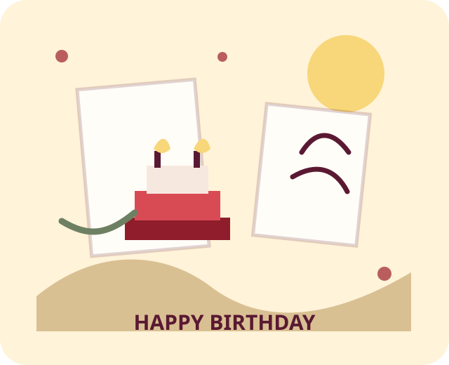
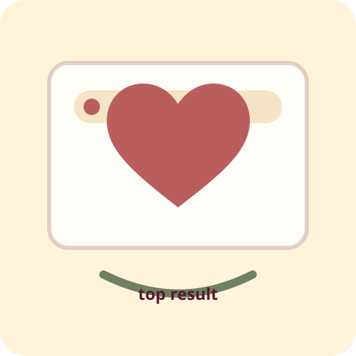
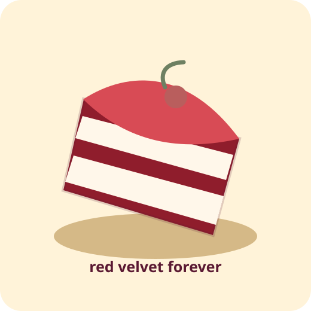
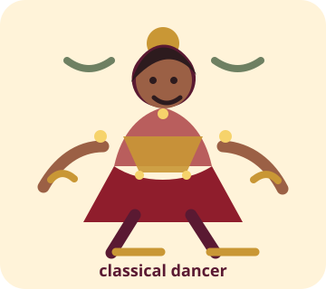
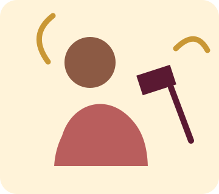
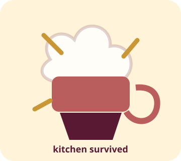
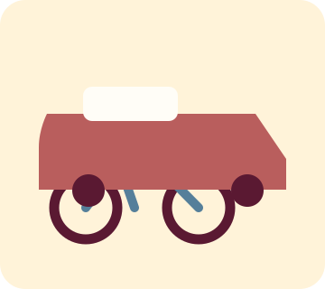
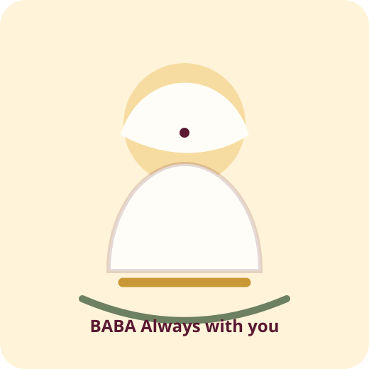
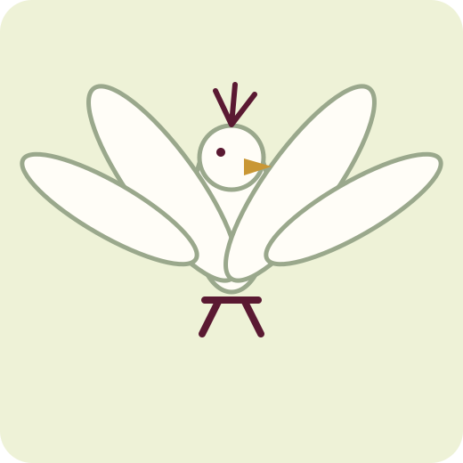
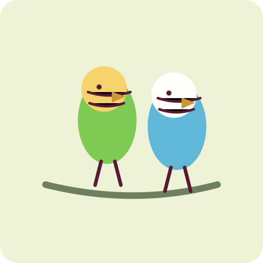

Checkpoint 01
Kind hearted. Like, seriously.
If we searched the internet for “kindness,” honestly, her name should show up first. Soft heart, thoughtful words, and that rare ability to make people feel less alone.
Top result for kindness
Birthday story
A little scroll scrapbook for the dancer, developer, singer, doodler, traveler, red-velvet-cake fan, bird parent, Sai Baba believer, and genuinely kind human we are celebrating today.
Start the story
Checkpoint 01
If we searched the internet for “kindness,” honestly, her name should show up first. Soft heart, thoughtful words, and that rare ability to make people feel less alone.
Top result for kindness


Favorite checkpoint
Not just cake. The favorite cake. The birthday table is incomplete until red velvet arrives looking dramatic and delicious.
Official favorite
Checkpoint wall
Some people have hobbies. Some people have a whole personality museum. This is that museum.

Has rhythm, expression, and main-character energy when music starts.
Turns coffee, patience, and logic into things that actually work.

A voice that can make a normal moment feel a little more cinematic.

The kitchen may file complaints, but the confidence is inspirational.

Knows how to ride a bike and drive a car. Freedom: unlocked.
Little lines, tiny ideas, and random sketches with actual charm.
Can explain, listen, and somehow make people feel understood.
Proof that even vision issues can become part of the aesthetic.
Checkpoint 03
She loves to travel, explore, learn, and keep moving forward. Independent does not mean alone. It means she knows how to carry herself with courage.
StrongIndependentTravel lover

Checkpoint 04
She believes in God, and Sai Baba holds a special place in her heart. A quiet kind of faith, the kind that gives strength when words are not enough.
A small present
A white peacock and budgerigar birds are adopted on behalf of you.


Final note
May this year bring safe travels, better code, louder songs, cleaner doodles, kinder days, red velvet cake at the right moments, and people who love her exactly as she is.